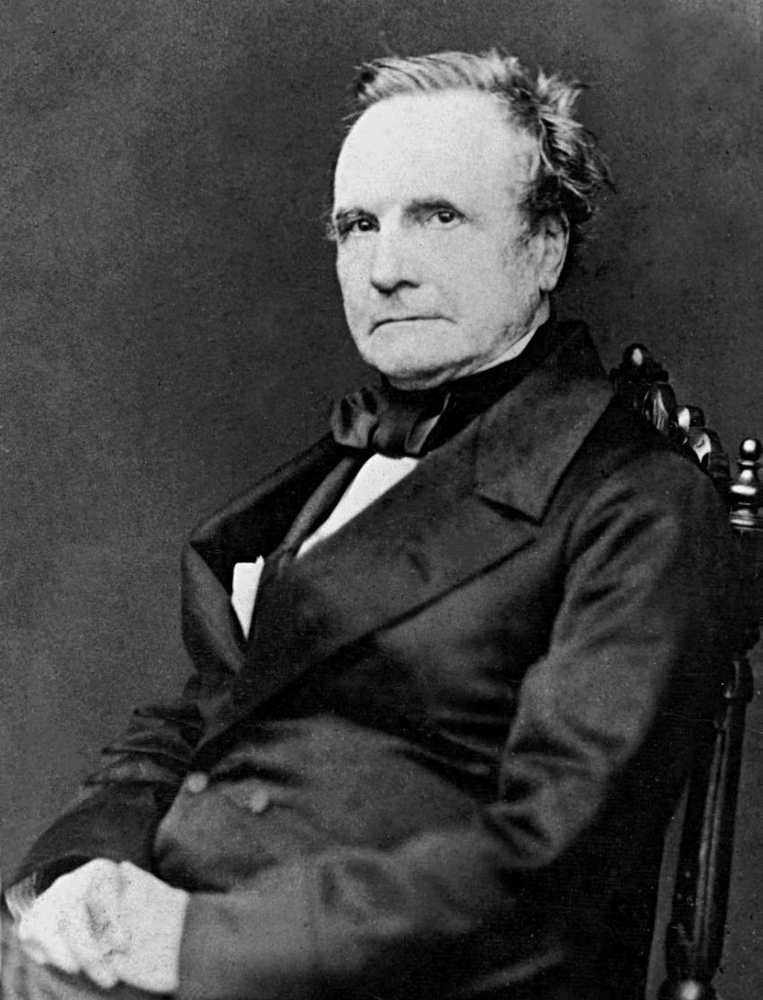

Grandes Personajes de la Computación
Charles Babbage
Charles Babbage (26 de diciembre de 1791 – 18 de octubre de 1871) fue un matemático británico y científico de la computación. Diseñó y parcialmente implementó una máquina para calcular, de diferencias mecánicas para calcular tablas de números. También diseñó, pero nunca construyó, la máquina analítica para ejecutar programas de tabulación o computación; por estos inventos se le considera como una de las primeras personas en concebir la idea de lo que hoy llamaríamos una computadora, por lo que se le considera como «El Padre de la Computación».
Imágenes relacionadas:
